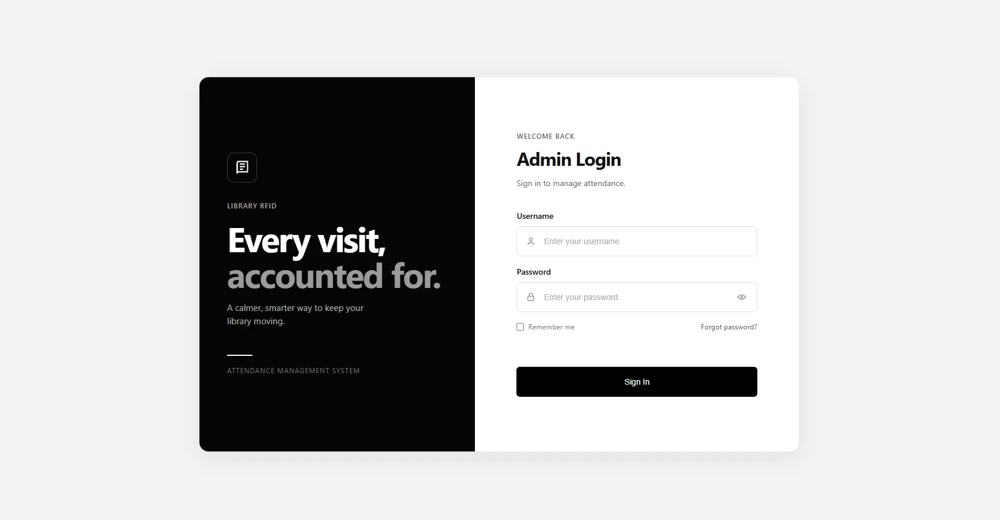

CASE STUDY / LIBRARY MANAGEMENT
RFID Library System
A library management system focused on RFID-supported book tracking and checkout workflows.

Problem & Project Context
The existing portfolio describes the project as a library system focused on RFID-supported book tracking and checkout workflows. A separate written problem statement or project brief was not supplied.
Project Objectives & Target Users
Formal objectives and specific library user groups were not documented. The available interface is labeled “Library RFID” and “Attendance Management System” and presents an Admin Login, identifying an administrator-facing entry point.
My Role
Your specific design, development, or collaboration responsibilities are not documented in the supplied project materials. This section is kept factual until those contributions are confirmed.
System Workflow
The documented project focus is RFID-supported book tracking and checkout. Detailed workflow steps, reader behavior, transaction states, and process diagrams were not included in the available materials.
Design Process & Interface
No wireframes or process notes were supplied. The available screen shows an administrator sign-in form with username and password fields, a remember-me option, and a password-recovery link.
Final UI
The portfolio currently contains the administrator sign-in screen. Additional project screenshots can be added here individually when supplied.
Administrator Portal
RFID-related Interface Features
The project description identifies RFID-supported book tracking and checkout, but the supplied UI image shows only the sign-in screen. No scan station or RFID transaction screen is presented here.
Frontend Implementation
The project’s frontend stack and individual implementation contributions were not included in the supplied materials. The RFID Library live demo is available to explore.
Challenges & Learnings
Personal challenges and learning notes were not provided. Add confirmed examples here rather than presenting assumptions as project outcomes.